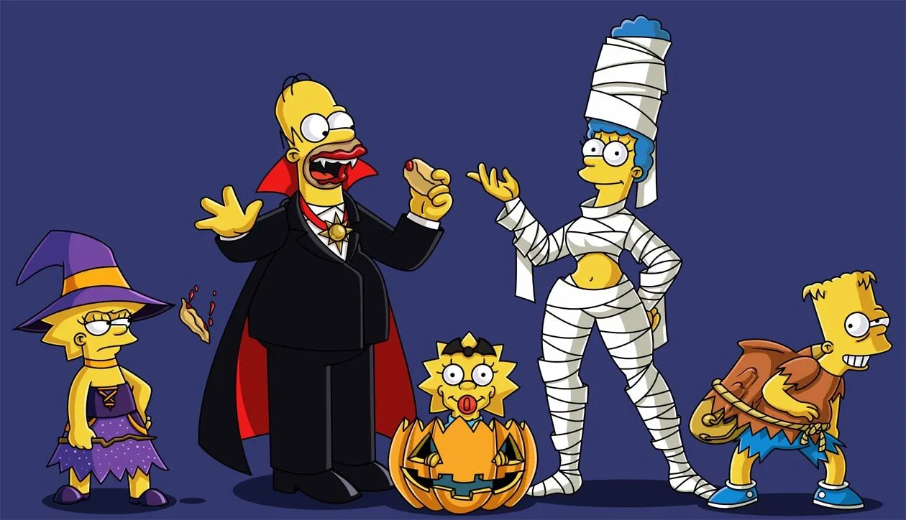
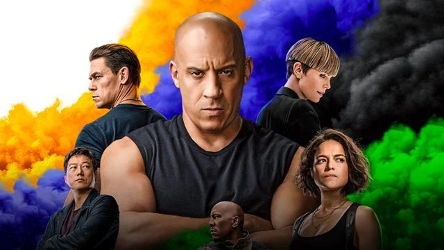
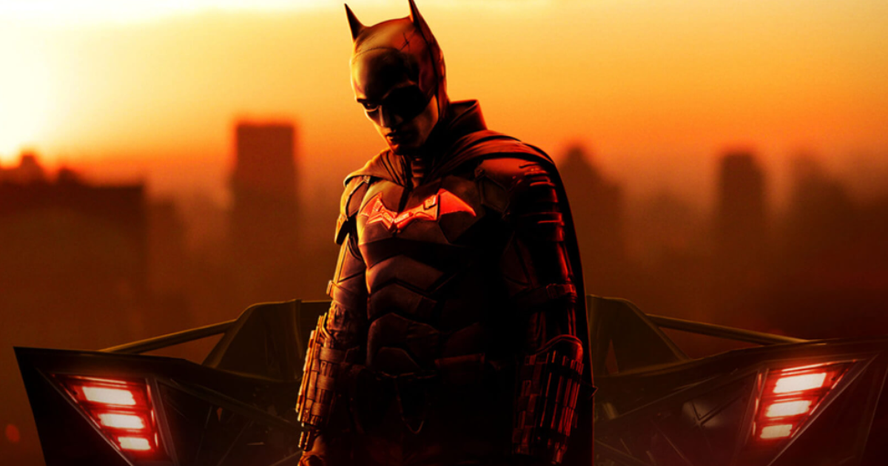

'Vingadores: Guerra Infinita' na Globo deixa fãs nostálgicos pelo cinema
Fãs relembraram estreia de "Vingadores: Guerra Infinita" nos cinemas, antes da pandemia.

A Globo exibiu "Vingadores: Guerra Infinita"no "Tela Quente", e despertou muitas emoções nos fãs... Foi felicidade, tristeza, tensão... Mas acima de tudo: saudade de ir ao cinema!
Simpsons resgatará anime clássico em seu especial de Halloween: "Quebraremos uma regra nunca antes rompida".
Os Simpsons fará especial de Halloween com paródias de Death Note e It - A Coisa.

Como todos os anos, a série animada "Os Simpsons" retorna com o seu assustador e divertido especial de Halloween chamado "A Casa do Horror". Desta vez, a série contará com dois episódios neste especial de Halloween: Death Note e It - A Coisa.
'Velozes & Furiosos' se torna a 5ª maior franquia de Hollywood e empata com recorde de Harry Potter
Com o lançamento de Velozes & Furiosos 10 nos cinemas, a franquia de ação ultrapassou a marca impressionante de US$ 7 bilhões nas bilheterias.

Com o lançamento de Velozes & Furiosos 10 nos cinemas, a franquia de ação estrelada por Vin Diesel alcançou um novo marco impressionante, ultrapassando a casa dos US$ 7 bilhões nas bilheterias. Segundo o Deadline, Velozes & Furiosos acaba de se tornar a quinta maior franquia de Hollywood, em termos de bilheteria, composta por apenas 11 filmes.
Stranger Things: Série da Netflix é a mais assistida de 2022
A série "Stranger Things" obteve muito acesso em 2022.

Não teve para ninguém. O título de série mais assistida de 2022 nos Estados Unidos é de "Stranger Things", da Netflix, segundo a empresa de análise Nielsen. No ano passado, a produção estreou sua 4ª temporada, que foi uma das mais elogiadas da saga criada por Matt Duffer e Ross Duffer e também uma das mais longas, com episódios que tiveram durações de filmes e encantaram os fãs com narrativas emocionantes e intensas.
Batman 2: Diretor faz revelação animadora a respeito do segundo filme do Morcego
Ainda em fase de pré-produção, Matt Reeves tranquilizou os fãs do Cavaleiro das Trevas.

Um dos filmes de super-heróis mais aguardados dos próximos anos, "Batman 2" já está em fase de pré-produção, trazendo de volta as presenças de Robert Pattinson, Zoë Kravitz e continuando sob a tutela de Matt Reeves.